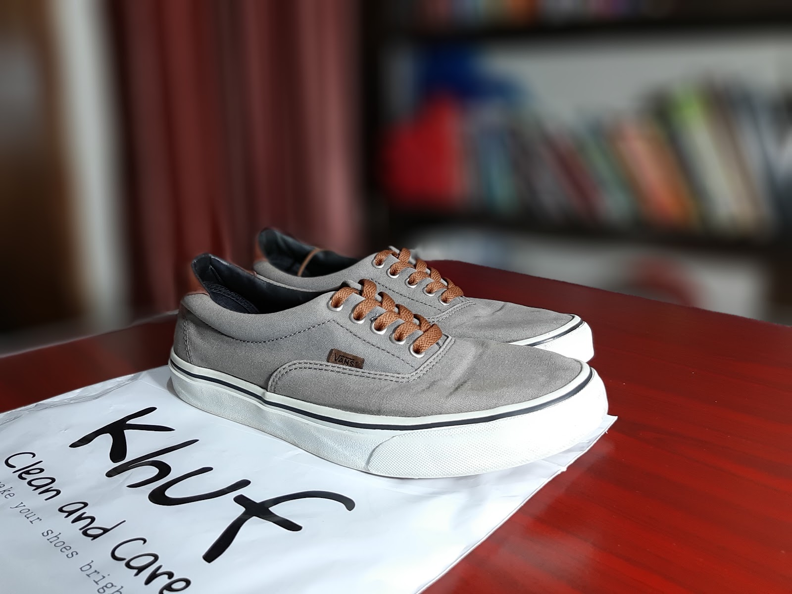
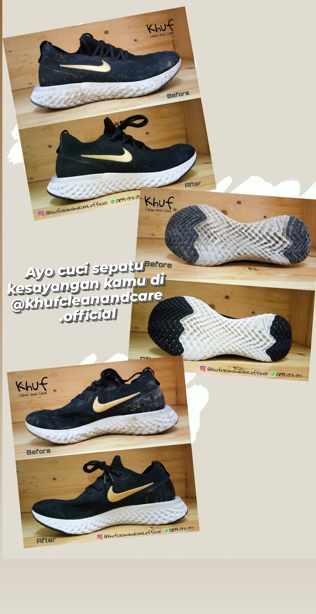
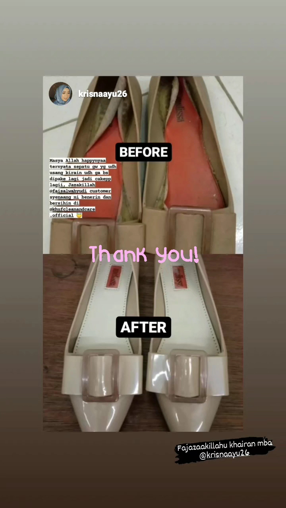

Deep Cleaning
Minta EstimasiRekomendasi treatment setelah pemeriksaan kondisi.
- ✓ Pemeriksaan material
- ✓ Treatment sesuai kondisi
- ✓ Quality control
Cleaning, repaint, dan repair yang dikerjakan teliti untuk menjaga sepatu kesayanganmu.
Khuf membantu merawat sepatu, tas, dompet, dan topi melalui pemeriksaan kondisi serta metode yang disesuaikan dengan material.


GALERI KHUF
Lihat proses kerja dan hasil perawatan asli Khuf Clean and Care.





Rekomendasi treatment setelah pemeriksaan kondisi.

Rekomendasi treatment setelah pemeriksaan kondisi.

Rekomendasi treatment setelah pemeriksaan kondisi.
GOOGLE REVIEWS
Review asli pelanggan Khuf yang tersedia secara publik di Google Maps.
Serahin ke kami. Antar-jemput gratis, sepatu pulang kinclong tanpa kamu repot.
CHAT SEKARANG, GRATIS ANTAR JEMPUT